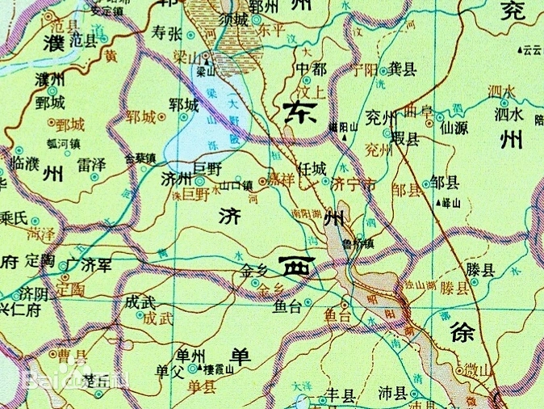
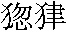

第十五回 吴学究说三阮撞筹1 公孙胜应七星聚义
诗曰：
英雄聚会本无期，水浒山涯任指挥。
欲向生辰邀众宝，特扳三阮协神机。
一时豪侠欺黄屋，七宿光芒动紫微。
众守梁山同聚义，几多金帛尽俘归。
话说当时吴学究道：”我寻思起来，有三个人，义胆包身，武艺出众，敢赴汤蹈火，同死同生，义气最重。只除非得这三个人，方才完得这件事。”晁盖道：”这三个却是甚么样人？姓甚名谁？何处居住？”吴用道：”这三个人是弟兄三个，在济州2梁山泊边石碣村住，

日常只打鱼为生，亦曾在泊子里做私商勾当。本身姓阮，弟兄三人：一个唤做立地太岁阮小二，一个唤做短命二郎阮小五，一个唤做活阎罗阮小七。这三个是亲弟兄，最有义气。小生旧日在那里住了数年，与他相交时，他虽是个不通文墨的人，为见他与人结交，真有义气，是个好男子，因此和他来往。今已二三年有馀，不曾相见。若得此三人，大事必成。”晁盖道：”我也曾闻这阮家三弟兄的名字，只不曾相会。石碣村离这里只有百十里以下路程，何不使人请他们来商议？”吴用道：”着人去请，他们如何肯来。小生必须自去那里，凭三寸不烂之舌，说他们入伙。”晁盖大喜道：”先生高见，几时可行？”吴用答道：”事不宜迟，只今夜三更便去，明日晌午可到那里。”晁盖道：”最好。”当时叫庄客且安排酒食来吃。吴用道：”北京到东京也曾行到，只不知生辰纲从那条路来？再烦刘兄休辞生受，连夜去北京路上探听起程的日期，端的从那条路上来。”刘唐道：”小弟只今夜也便去。”吴用道：”且住。他生辰是六月十五日，如今却是五月初头，尚有四五十日。等小生先去说了三阮弟兄回来，那时却叫刘兄去。”晁盖道：”也是。刘兄弟只在我庄上等候。”话休絮烦。当日吃了半晌酒食，至三更时分，吴用起来洗漱罢，吃了些早饭，讨了些银两，藏在身边，穿上草鞋。晁盖、刘唐送出庄门，吴用连夜投石碣村来。行到晌午时分，早来到那村中。但见：
青郁郁山峰叠翠，绿依依桑柘堆云。四边流水绕孤村，几处疏篁沿小径。茅檐傍涧，古木成林。篱外高悬沽酒旆，柳阴闲缆钓鱼船。
吴学究自来认得，不用问人，来到石碣村中，径投阮小二家来。到得门前看时，只见枯桩上缆着数只小渔船，疏篱外晒着一张破鱼网，倚山傍水，约有十数间草房。吴用叫一声道：”二哥在家么？”只见一个人从里面走出来，生得如何？但见：
眍兜脸两眉竖起，略绰口四面连拳。胸前一带盖胆黄毛，背上两枝横生板肋。臂膊有千百斤气力，眼睛射几万道寒光。人称立地太岁，果然混世魔王。
那阮小二走将出来，头戴一顶破头巾，身穿一领旧衣服，赤着双脚，出来见了是吴用，慌忙声喏道：”教授何来？甚风吹得到此？”吴用答道：”有些小事，特来相浼二郎。”阮小二道：”有何事，但说不妨。”吴用道：”小生自离了此间，又早二年。如今在一个大财主家做门馆，他要办筵席，用着十数尾重十四五斤的金色鲤鱼，因此特地来相投足下。”阮小二笑了一声，说道：”小人且和教授吃三杯却说。”吴用道：”小生的来意，也欲正要和二哥吃三杯。”阮小二道：”隔湖有几处酒店，我们就在船里荡将过去。”吴用道：”最好。也要就与五郎说句话，不知在家也不在？”阮小二道：”我们一同去寻他便了。”两个来到泊岸边，枯桩上缆的小船解了一只，便扶这吴用下船坐了。树根头拿了一把划楸3，只顾荡，早荡将开去，望湖泊里来。正荡之间，只见阮小二把手一招，叫道：”七哥曾见五郎么？”吴用看时，只见芦苇丛中，摇出一只船来。那汉生的如何？但见：
疙疸脸横生怪肉，玲珑眼突出双睛。腮边长短淡黄须，身上交加乌黑点。浑如生铁打成，疑是顽铜铸就。休言岳庙恶司神4，果是人间刚直汉。村中唤作活阎罗，世上降生真五道。
这阮小七头戴一顶遮日黑箬笠，身上穿个棋子布背心，腰系着一条生布裙，把那船只荡着，问道：”二哥，你寻五哥做甚么？”吴用叫一声：”七郎，小生特来相央你们说话。”阮小七道：”教授恕罪，好几时不曾相见。”吴用道：”一同和二哥去吃杯酒。”阮小七道：”小人也欲和教授吃杯酒，只是一向不曾见面。”
两只船厮跟着在湖泊里，不多时，划到一个去处，团团都是水，高埠上有七八间草房。阮小二叫道：”老娘，五哥在么？”那婆婆道：”说不得。鱼又不得打，连日去赌钱，输得没了分文，却才讨了我头上钗儿，出镇上赌去了。”阮小二笑了一声，便把船划开。阮小七便在背后船上说道：”哥哥正不知怎地，赌钱只是输，却不晦气。莫说哥哥不赢，我也输得赤条条地。”吴用暗想道：”中了我的计。”
两只船厮并着，投石碣村镇上来。划了半个时辰，只见独木桥边一个汉子，把着两串铜钱，下来解船。阮小二道：”五郎来了。”吴用看时，但见：
一双手浑如铁棒，两只眼有似铜铃。面皮上常有些笑容，心窝里深藏着鸩毒。能生横祸，善降非灾。拳打来狮子心寒，脚踢处蚖蛇丧胆。何处觅行瘟使者，只此是短命二郎。
那阮小五斜戴着一顶破头巾，鬓边插朵石榴花，披着一领旧布衫，露出胸前刺着的青郁郁一个豹子来；里面匾扎起裤子，上面围着一条间道棋子布手巾。吴用叫一声道：”五郎得采么？”阮小五道：”原来却是教授，好两年不曾见面。我在桥上望你们半日了。”阮小二道：”我和教授直到你家寻你，老娘说道：’出镇上赌钱去了。’因此同来这里寻你。且来和教授去水阁上吃三杯。”阮小五慌忙去桥边，解了小船，跳在舱里，捉了划楫，只一划，三只船厮并着。划了一歇，早到那个水阁酒店前。看时，但见：
前临湖泊，后映波心。数十株槐柳绿如烟，一两荡荷花红照水。凉亭上四面明窗，水阁中数般清致。当垆美女，红裙掩映翠纱衫；涤器山翁，白发偏宜麻布袄。休言三醉岳阳楼5，只此便为蓬岛客。
当下三只船撑到水亭下荷花荡中，三只船都缆了。扶吴学究上了岸，入酒店里来，都到水阁内拣一副红油桌凳。阮小二便道：”先生，休怪我三个弟兄粗俗，请教授上坐。”吴用道：”却使不得。”阮小七道：”哥哥只顾坐主位，请教授坐客席，我兄弟两个便先坐了。”吴用道：”七郎只是性快。”四个人坐定了，叫酒保打一桶酒来。店小二把四只大盏子摆开，铺下四双箸，放下四般菜蔬，打一桶酒放在桌子上。阮小七道：”有甚么下口？”小二哥道：”新宰得一头黄牛，花糕也相似好肥肉。”阮小二道：”大块切十斤来。”阮小五道：”教授休笑话，没甚孝顺。”吴用道：”倒来相扰，多激恼你们。”阮小二道：”休恁地说。”催促小二哥只顾筛酒，早把牛肉切做两盘，将来放在桌上。阮家三兄弟让吴用吃了几块，便吃不得了。那三个狼餐虎食，吃了一回。
阮小五动问道：”教授到此贵干？”阮小二道：”教授如今在一个大财主家做门馆教学。今来要对付十数尾金色鲤鱼，要重十四五斤的，特来寻我们。”阮小七道：”若是每常，要三五十尾也有，莫说十数个，再要多些，我弟兄们也包办得。如今便要重十斤的也难得。”阮小五道：”教授远来，我们也对付十来个重五六斤的相送。”吴用道：”小生多有银两在此，随算价钱。只是不用小的，须得十四五斤重的便好。”阮小七道：”教授，却没讨处。便是五哥许五六斤的，也不能勾，须是等得几日才得。我的船里有一桶小活鱼，就把来吃酒。”阮小七便去船内取将一桶小鱼上来，约有五七斤，自去灶上安排，盛做三盘，把来放在桌上。阮小七道：”教授，胡乱吃些个。”
四个又吃了一回，看看天色渐晚，吴用寻思道：”这酒店里须难说话。今夜必是他家权宿，到那里却又理会。”阮小二道：”今夜天色晚了，请教授权在我家宿一宵，明日却再计较。”吴用道：”小生来这里走一遭，千难万难，幸得你们弟兄今日做一处，眼见得这席酒不肯要小生还钱。今晚借二郎家歇一夜，小生有些须银子在此，相烦就此店中沽一瓮酒，买些肉，村中寻一对鸡，夜间同一醉如何？”阮小二道：”那里要教授坏钱，我们弟兄自去整理，不烦恼没对付处。”吴用道：”径来要请你们三位，若还不依小生时，只此告退。”阮小七道：”既是教授这般说时，且顺情吃了，却再理会。”吴用道：”还是七郎性直爽快。”吴用取出一两银子，付与阮小七，就问主人家沽了一瓮酒，借个大瓮盛了，买了二十斤生熟牛肉，一对大鸡。阮小二道：”我的酒钱一发还你。”店主人道：”最好，最好。”
四人离了酒店，再下了船，把酒肉都放在船舱里，解了缆索，径划将开去，一直投阮小二家来。到得门前，上了岸，把船仍旧缆在桩上，取了酒肉，四人一齐都到后面坐地，便叫点起灯烛。原来阮家弟兄三个，只有阮小二有老小，阮小五、阮小七都不曾婚娶。四个人都在阮小二家后面水亭上坐定。阮小七宰了鸡，叫阿嫂同讨的小猴子6在厨下安排。约有一更相次，酒肉都搬来摆在桌上。
吴用劝他弟兄们吃了几杯，又提起买鱼事来，说道：”你这里偌大一个去处，却怎地没了这等大鱼？”阮小二道：”实不瞒教授说，这般大鱼只除梁山泊里便有。我这石碣湖中狭小，存不得这等大鱼。”吴用道：”这里和梁山泊一望不远，相通一派之水，如何不去打些？”阮小二叹了一口气道：”休说。”吴用又问道：”二哥如何叹气？”阮小五接了说道：”教授不知，在先这梁山泊是我弟兄们的衣饭碗，如今绝不敢去。”吴用道：”偌大去处，终不成官司禁打鱼鲜？”阮小五道：”甚么官司敢来禁打鱼鲜，便是活阎王也禁治不得！”吴用道：”既没官司禁治，如何绝不敢去？”阮小五道：”原来教授不知来历，且和教授说知。”吴用道：”小生却不理会得。”阮小七接着便道：”这个梁山泊去处，难说难言！如今泊子里新有一伙强人占了，不容打鱼。”吴用道：”小生却不知，原来如今有强人，我那里并不曾闻得说。”阮小二道：”那伙强人，为头的是个秀才，落科举子，唤做白衣秀士王伦；第二个叫做摸着天杜迁；第三个叫做云里金刚宋万；以下有个旱地忽律7朱贵，见在李家道口开酒店，专一探听事情，也不打紧。如今新来一个好汉，是东京禁军教头，甚么豹子头林冲，十分好武艺。这伙人好生了得，都是有本事的。这几个贼男女聚集了五七百人，打家劫舍，抢掳来往客人。我们有一年多不去那里打鱼。如今泊子里把住了，绝了我们的衣饭，因此一言难尽！”吴用道：”小生实是不知有这段事。如何官司不来捉他们？”阮小五道：”如今那官司，一处处动掸便害百姓。但一声下乡村来，倒先把好百姓家养的猪羊鸡鹅，尽都吃了，又要盘缠打发他。如今也好，教这伙人奈何，那捕盗官司的人，那里敢下乡村来。若是那上司官员差他们缉捕人来，都吓得尿屎齐流，怎敢正眼儿看他。”阮小七道：”我虽然不打得大鱼，也省了若干科差8。”吴用道：”恁地时，那厮们倒快活。”阮小五道：”他们不怕天，不怕地，不怕官司，论秤分金银，异样穿绸锦，成瓮吃酒，大块吃肉，如何不快活！我们弟兄三个空有一身本事，怎地学得他们。”吴用听了，暗暗地欢喜道：”正好用计了。”
阮小七又道：”人生一世，草生一秋。我们只管打鱼营生，学得他们过一日也好。”吴用道：”这等人学他做甚么！他做的勾当，不是笞杖五七十的罪犯，空自把一身虎威都撇下。倘或被官司拿住了，也是自做的罪。”阮小二道：”如今该管官司没甚分晓，一片糊突，千万犯了迷天大罪的倒都没事。我弟兄们不能快活，若是但有肯带挈我们的，也去了罢！”阮小五道：”我也常常这般思量。我弟兄三个的本事，又不是不如别人，谁是识我们的？”吴用道：”假如便有识你们的，你们便如何肯去？”阮小七道：”若是有识我们的，水里水里去，火里火里去。若能勾受用得一日，便死了开眉展眼。”吴用暗地想道：”这三个都有意了，我且慢慢地诱他。”吴用又劝他三个吃了两巡酒。正是：
只为奸邪屈有才，天教恶曜下凡来。
试看小阮三兄弟，劫取生辰不义财。
吴用又说道：”你们三个敢上梁山泊捉这伙贼么？”阮小七道：”便捉的他们，那里去请赏？也吃江湖上好汉们笑话。”吴用道：”小生短见，假如你们怨恨打鱼不得，也去那里撞筹却不是好。”阮小二道：”先生你不知，我弟兄们几遍商量，要去入伙，听得那白衣秀士王伦的手下人，都说道他心地窄狭，安不得人。前番那个东京林冲上山，呕尽他的气。王伦那厮不肯胡乱着人，因此我弟兄们看了这般样，一齐都心懒了。”阮小七道：”他们若似老兄这等慷慨，爱我弟兄们便好。”阮小五道：”那王伦若得似教授这般情分时，我们也去了多时，不到今日。我弟兄三个便替他死也甘心！”吴用道：”量小生何足道哉！如今山东、河北多少英雄豪杰的好汉。”阮小二道：”好汉们尽有，我弟兄自不曾遇着。”吴用道：”只此间郓城县东溪村晁保正，你们曾认得他么？”阮小五道：”莫不是叫做托塔天王的晁盖么？”吴用道：”正是此人。”阮小七道：”虽然与我们只隔得百十里路程，缘分浅薄，闻名不曾相会。”吴用道：”这等一个仗义疏财的好男子，如何不与他相见？”阮小二道：”我弟兄们无事，也不曾到那里，因此不能勾与他相见。”吴用道：”小生这几年也只在晁保正庄上左近教些村学。如今打听得他有一套富贵待取，特地来和你们商议，我等就那半路里拦住取了，如何？”阮小五道：”这个却使不得。他既是仗义疏财的好男子，我们却去坏他的道路9，须吃江湖上好汉们知时笑话。”吴用道：”我只道你们弟兄心志不坚，原来真个惜客好义。我对你们实说，果有协助之心，我教你们知此一事。我如今见在晁保正庄上住，保正闻知你三个大名，特地教我来请你们说话。”阮小二道：”我弟兄三个，真真实实地并没半点儿假。晁保正敢10有件奢遮11的私商买卖，有心要带挈我们，以定是烦老兄来。若还端的有这事，我三个若舍不得性命相帮他时，残酒为誓，教我们都遭横事，恶病临身，死于非命。”阮小五和阮小七把手拍着脖项道：”这腔热血，只要卖与识货的！”吴用道：”你们三位弟兄在这里，不是我坏心术来诱你们，这件事，非同小可的勾当。目今朝内蔡太师是六月十五日生辰，他的女婿是北京大名府梁中书，即日起解十万贯金珠宝贝与他丈人庆生辰。今有一个好汉姓刘名唐，特来报知。如今欲要请你们去商议，聚几个好汉，向山凹僻静去处，取此一套富贵，不义之财，大家图个一世快活。因此特教小生只做买鱼，来请你们三个计较，成此一事。不知你们心意如何？”阮小五听了道：”罢，罢！”叫道：”七哥，我和你说甚么来？”阮小七跳起来道：”一世的指望，今日还了愿心，正是搔着我痒处。我们几时去？”吴用道：”请三位即便去来。明日起个五更，一齐都去晁天王庄上去。”阮家三弟兄大喜。有诗为证：
壮志淹留未得伸，今逢学究启其心。
大家齐入梁山泊，邀取生辰宝共金。
当夜过了一宿。次早起来，吃了早饭，阮家三弟兄分付了家中，跟着吴学究，四个人离了石碣村，拽开脚步，取路投东溪村来。行了一日，早望见晁家庄，只见远远地绿槐树下晁盖和刘唐在那里等。望见吴用引着阮家三兄弟，直到槐树前，两下都厮见了。晁盖大喜道：”阮氏三雄，名不虚传。且请到庄里说话。”六人却从庄外入来，到得后堂，分宾主坐定。吴用把前话说了，晁盖大喜，便叫庄客宰杀猪羊，安排烧纸。阮家三弟兄见晁盖人物轩昂，语言洒落，三个说道：”我们最爱结识好汉，原来只在此间。今日不得吴教授相引，如何得会！”三个弟兄好生欢喜。当晚且吃了些饭，说了半夜话。次日天晓，去后堂前面，列了金钱纸马，摆了夜来煮的猪羊、烧纸。三阮见晁盖如此志诚，排列香花灯烛面前，个个说誓道：”梁中书在北京害民，诈得钱物，却把去东京与蔡太师庆生辰，此一等正是不义之财。我等六人中，但有私意者，天地诛灭，神明鉴察。”六人都说誓了，烧化钱纸。
六筹好汉正在后堂散福饮酒，只见一个庄客报说：”门前有个先生12要见保正化斋粮。”晁盖道：”你好不晓事！见我管待客人在此吃酒，你便与他三五升米便了，何须直来问我。”庄客道：”小人把米与他，他又不要，只要面见保正。”晁盖道：”以定是嫌少，你便再与他三二斗米去。你说与他，保正今日在庄上请人吃酒，没工夫相见。”庄客去了多时，只见又来说道：”那先生，与了他三斗米，又不肯去；自称是一清道人，不为钱米而来，只要求见保正一面。”晁盖道：”你这厮不会答应。便说今日委实没工夫，教他改日却来相见拜茶。”庄客道：”小人也是这般说。那个先生说道：’我不为钱米斋粮，闻知保正是个义士，特求一见。’“晁盖道：”你也这般缠，全不替我分忧。他若再嫌少时，可与他三四斗米去，何必又来说。我若不和客人们饮时，便去厮见一面，打甚么紧。你去发付他罢，再休要来说。”庄客去了没半个时，只听得庄门外热闹，又见一个庄客飞也似来报道：”那先生发怒，把十来个庄客都打倒了。”晁盖听得，吃了一惊，慌忙起身道：”众位弟兄少坐，晁盖自去看一看。”便从后堂出来，到庄门前看时，只见那个先生，身长八尺，道貌堂堂，威风凛凛，生得古怪，正在庄门外绿槐树下，打那众庄客。晁盖看那先生时，但见：
头绾两枚鬅松双丫髻，身穿一领巴山短褐袍，腰系杂色彩丝绦，背上松纹古铜剑。白肉脚衬着多耳麻鞋，绵囊手拿着鳖壳扇子。八字眉一双杏子眼，四方口一部落腮胡。
那先生一头打庄客，一头口里说道：”不识好人！”晁盖见了叫道：”先生息怒。你来寻晁保正，无非是投斋化缘，他已与了你米，何故嗔怪如此？”那先生哈哈大笑道：”贫道不为酒食钱米而来。我觑得十万贯如同等闲，特地来寻保正有句话说。叵耐村夫无礼，毁骂贫道，因此性发。”晁盖道：”你曾认得晁保正么？”那先生道：”只闻其名，不曾会面。”晁盖道：”小子便是。先生有甚话说？”那先生看了道：”保正休怪，贫道稽首。”晁盖道：”先生少请到庄里拜茶如何？”那先生道：”多感。”两人入庄里来。吴用见那先生入来，自和刘唐、三阮一处躲过。
且说晁盖请那先生到后堂吃茶已罢，那先生道：”这里不是说话处，别有甚么去处可坐？”晁盖见说，便邀那先生又到一处小小阁儿内，分宾坐定。晁盖道：”不敢拜问先生高姓？贵乡何处？”那先生答道：”贫道复姓公孙，单讳一个胜字，道号一清先生。小道是蓟州人氏，自幼乡中好习枪棒，学成武艺多般，人但呼为公孙胜大郎。因为学得一家道术，亦能呼风唤雨，驾雾腾云，江湖上都称贫道做入云龙。贫道久闻郓城县东溪村保正大名，无缘不曾拜识。今有十万贯金珠宝贝，专送与保正作进见之礼，未知义士肯纳否？”晁盖大笑道：”先生所言，莫非北地生辰纲么？”那先生大惊道：”保正何以知之？”晁盖道：”小子胡猜，未知合先生意否？”公孙胜道：”此一套富贵，不可错过！古人有云：当取不取，过后莫悔。保正心下如何？”
正说之间，只见一个人从阁子外抢将入来，劈胸揪住公孙胜，说道：”好呀！明有王法，暗有神灵，你如何商量这等的勾当？我听得多时也。”吓得这公孙胜面如土色。正是：机谋未就，争奈窗外人听；计策才施，又早萧墙祸起。直教七筹好汉当时聚，万贯资财指日空。毕竟抢来揪住公孙胜的却是何人，且听下回分解。
《第十五回 吴学究说三阮撞筹 公孙胜应七星聚义》读后感
接上回。吴用为了应北斗七星的预兆，到隔壁石碣村去找阮氏三雄来帮忙劫取生辰纲。
三人其实都是生活在社会最底层的贫苦大众，从他们出场时破烂的衣着就可以看出来。吴用以买大鱼打开话头，正是为了让三阮感到为难。因为他肯定知道因为强邻梁山泊，他们打不到大鱼。生活没有着落，官府又不管。北京的梁中书只顾搜刮百姓给东京的岳父送寿礼，更激起了他们心中的不满。先让他们感到绝望，再让其出离愤怒，最后给一条逆袭之路，是个人都知道怎么选。吴用在这回的表现还是比较让人印象深刻的。
三阮和晁、吴、刘正在晁盖庄内祭神，外面来了一个道人要见晁盖，一言不合就开始打庄客。打了十几个庄客后，晁盖也慌了，赶忙出来看。原来此人是入云龙公孙胜，属于法师，后文可见其法力无边，水浒里的战斗很多都由法力决定，在四大名著中虚幻值仅次于《西游记》，真的是没想到。
公孙胜也是来投奔晁盖，并给他带来了生辰纲的消息。至此，七星之梦已解。
脚注
-
撞筹——古人用算筹计数。撞筹，就是凑数、入伙。后文常有几筹好汉一语，就是几个好汉的意思。 ↩
-
济州: 济州在北宋时期是一个州级行政单位。从地理位置上看，其范围大致在今山东省巨野县一带。 ↩
-
划揪——桨。后文的”划楫”，也指桨。 ↩
-
司神：一种神灵，负责管理某一个特定领域或人类活动的方方面面。 ↩
-
三醉岳阳楼:《吕洞宾三醉岳阳楼》，由元代著名剧作家马致远创作。 ↩
-
小猴子——这里指小男孩。 ↩
-
忽律——鳄鱼。有时也写作”

“。 ↩ -
科差——缴纳捐税和承当差役。 ↩
-
道路——这里作生意、买卖解释。 ↩
-
敢——这里是莫非、大约的意思。 ↩
-
奢遮——了得、了不起的意思。 ↩
-
先生——宋时对道士的称呼之一。有时也用以称呼以医、卜、星、相为职业的人。 ↩